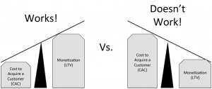

David Skok Discussion (LTV, Tuesday, Week 2)
launching-technology-venturesyear-twoWhole presentation is here: http://www.forentrepreneurs.com/sales-marketing-machine-webinar/
"I think it might be a sign of the apocalypse when Occupy Wall Street is the target market for an HBS student startup." -- Jeff Bussgang
After you have product/market fit, you still have to develop a repeatable and scalable sales model.
This is hard, because lots of sales models don't really scale --- SEM often doesn't, because there are only so many keywords and quality of results often declines.
Key element: CAC (or COCA) < LTV

Source: David Skok
{kind=link}
Impact of sales complexity: it really sucks.
Freemium >> No touch self-service >> Light-touch inside sales >> High-touch inside sales >> Field sales >> Field sales w/ Sales engineers
Each additional level of complexity increases CAC by a factor of 10!
More detail here: http://www.forentrepreneurs.com/sales-complexity/
Solution: Try to change your product to minimize sales complexity. Can you demo on the web?
A rule of thumb: sales guy needs to produce about 6x his/her salary.
Sit down with a blank sheet of paper and draw a diagram of your sales funnel. Put it on the wall in your office. Figure out where your blockage points are. Every week (or whatever), sit down with sales and marketing and discuss how you fix them.
Get your customers to self-identify into personas. Examples: newbie tech-user OR marketer OR engineer. Customize product/demo/pitch based on that in order to avoid customer confusion.
Overall takeaway:
Marketing and sales are not black arts. Marketing and sales are predictable, scalable, measurable activities. Treat them as such.